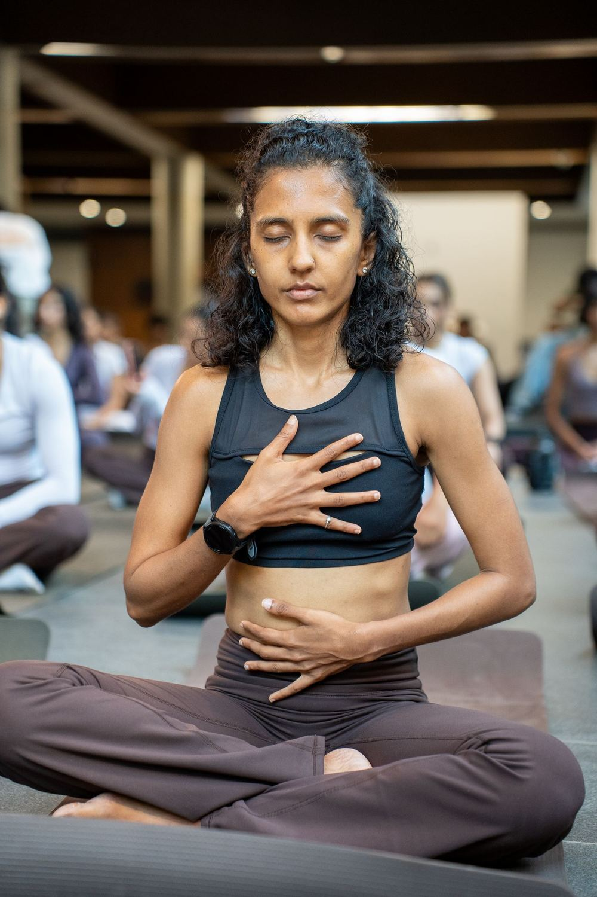

Menstrual
Days 1 – 5
Your body is recovering. We honour that with gentle movement, shorter distances, and recovery-focused sessions. No guilt, no pressure.
Recovery & restWomen don't train in straight lines. We train in seasons.
A women's movement community in Bengaluru — running, yoga and strength, trained by the science of your seasons. Coached by Shruthi, one woman at a time.
Most training treats every week the same. Your body doesn't. Energy, strength and recovery shift across your cycle — and shift again with the chapter of life you're in, and again with where you are in a block of training.
HerRhythm trains women the way women actually work. Not harder. In rhythm.
The Seasons
They're the chapter of life you're in. They're the block of training you're in. We coach all three at once — because you're living all three at once.
Branch one
Four phases. Four training strategies. Each phase of your cycle brings different strengths — we design training to match what your body is doing, not fight it.
Days 1 – 5
Your body is recovering. We honour that with gentle movement, shorter distances, and recovery-focused sessions. No guilt, no pressure.
Recovery & restDays 6 – 13
Energy rises. Estrogen climbs. This is when we build — increasing volume, adding strength work, preparing for your peak.
Build & growDays 14 – 16
Your power week. Strength, speed and endurance peak together. Tempo runs, intervals, longer distances — this is where they belong.
Peak performanceDays 17 – 28
Progesterone rises. We taper effort, hold consistency, and focus on steady, moderate work as your body prepares to reset.
Maintain & taperCycles aren't textbook. Neither are our plans — PCOS, irregular cycles, no cycle at all. Every plan is built for one runner.
Branch two
Every woman arrives in a different chapter. A plan that ignores the chapter isn't a plan — it's a template. We train the woman in front of us.
Different chapters. Same rhythm.
Branch three
Training has seasons of its own, and they don't all look like effort. Twelve weeks isn't twelve weeks of pushing — it's four seasons, in order, each doing a different job.
Build the ground
Easy miles at conversational pace. The least glamorous season, and the one everything after it stands on. If this part feels too easy, it's working.
Add the load
Volume climbs. Strength deepens. Long runs get longer. This is the season that feels like progress — and the one we still modulate week to week, because your cycle doesn't pause for a training block.
Sharpen
Less volume, more intent. Race-shaped work: tempo, intervals, the distance in your legs. Short, and it should feel sharp rather than heavy.
Let it land
The season nobody posts about. Fitness is built when you absorb the work, not while you're doing it — so we take it seriously, and we don't call it a break.
Two rhythms, running at once: your cycle and your training block. Coaching is knowing which one to listen to this week.
“Running is a season. Yoga is how you honour it.”
Yoga isn't an add-on at HerRhythm. It's the seasons made physical — what we do when your season calls for breath rather than pace, restoration rather than output.
Ways to Move
Some women start with a Sunday. Some start with twelve weeks. There's no wrong door.
Cycle-synced coaching to your first 5K or 10K. Shruthi builds your plan every week — around your cycle, your feedback, your life. Three runs, two strength sessions, two rest days, modulated by where you are.
Personally reviewed applications. Small cohorts, so the coaching stays real.
One Sunday a month, we open the doors. An easy group run, a guided yoga practice on the grass, coffee after, and about thirty women who get it. Roughly thirty spots, and they go.
The best way to meet us before you apply.
Come to a Sunday →Why We Exist
of race fields worldwide are women.
In India.
That gap isn't capability. It's misinformation — women told running is bad for them pre-natal, post-natal, on their period, at forty. Told progress should be a straight line upward, in a body that has never once worked that way.
Every woman we coach closes the gap by a little. That's the whole point.

The Coach
Founder · Head Coach · Yoga Therapist · Marathoner
Shruthi built HerRhythm out of her own training. She questioned her plans, her capacity, and her body through the phases nobody prepares you for — and found the same answer in the science and in her own legs: women training for endurance need to train with their cycle, not against it.
She's a two-time Boston Marathon qualifier and a yoga therapist, which is the whole thesis in one person — pace and breath, output and restoration, not a hierarchy.
She builds every plan in the program herself, and reads every application personally. That's the ceiling on how fast we grow, and we're keeping it.
Follow along →Your running history, your goals, your cycle. If you have PCOS, irregular periods, a recent birth, an old injury — we want all of it. Every body is different, and the plan is built for yours. Shruthi reads every application herself.
Your plan lands on WhatsApp every week. Run it, log it, tell her how it felt — and she adjusts before the next one.
Follow the plan. Come to Sundays. Log your runs and your symptoms. Watch what changes — season by season.
Twelve weeks later you'll have a finish line behind you. What you keep is knowing how to read your own body.
No. Most women arrive as complete beginners, having never run 5K. Walk, jog, or run — the right pace is yours, and the plan starts where you actually are.
No. Not in the plans, not in the coaching, not in how we talk about your body. What we train for is a finish line and the ability to read your own cycle. Anything else that happens is your business, not our marketing.
You're exactly who this was built for. Cycle-synced training isn't only for textbook cycles — where the cycle is irregular or absent, we train by symptoms, energy and recovery instead. Tell us on the application.
Maybe, maybe not — and the answer is yours and your doctor's, not the internet's. Bring it to the application. Returning to running post-partum is one of the things Shruthi coaches most.
For the Sunday runs and the monthly Run + Yoga, yes — those are in person, in Bangalore. We run at Lalbagh, 7:00 AM. The coaching, the weekly plans and the yoga session all run over WhatsApp and Zoom, so women train with us from other cities too.
Then you missed a week. It's not a moral failure, and it doesn't restart anything. Tell Shruthi what happened and the next plan accounts for it. No guilt, no pressure — that's not a slogan, it's how the coaching actually works.
Because Shruthi coaches every woman personally, and there's a real limit to how many that can be. Cohorts stay small — ten women — so the coaching stays personal. She reads every application herself.
Yes. Every part of it.
The next cohort opens soon. Applications are read personally, and spots are limited because the coaching is.
Not ready to decide? Come to a Sunday. That's what they're for.